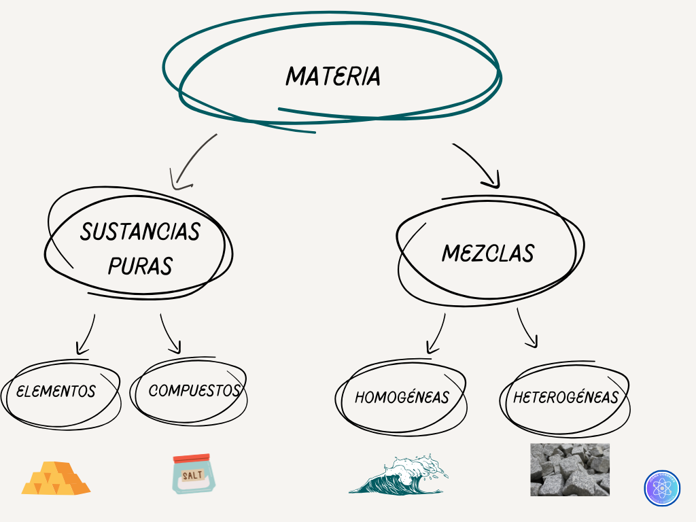
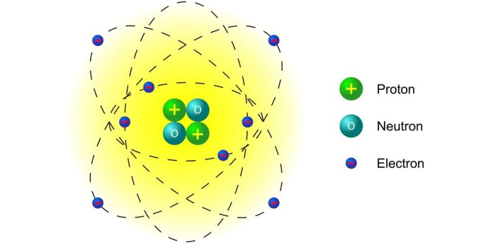
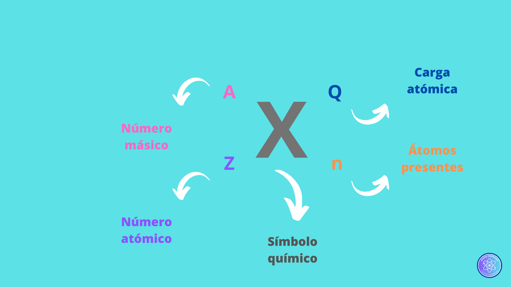
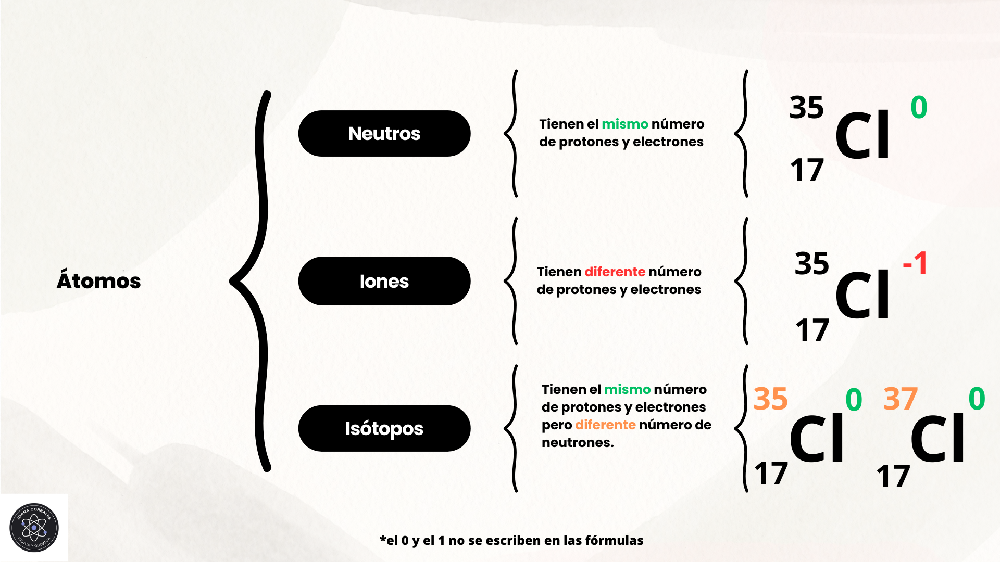
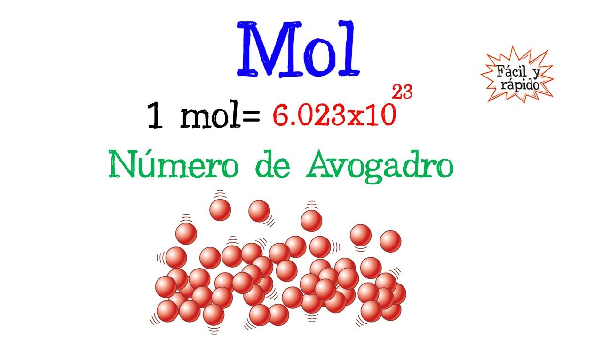

3.1 La materia y su clasificación
La materia se define como todo aquello que posee masa y ocupa un volumen en el espacio.
La materia puede presentarse en diferentes estados de agregación, influenciados por las condiciones de presión y temperatura. Tradicionalmente, se reconocen cuatro estados principales: sólido, líquido, gas y plasma.

3.2 Los átomos y sus características
El átomo es la unidad más pequeña de un elemento químico que conserva las propiedades características de dicho elemento.
Por lo general, los átomos están compuestos por tres tipos de partículas subatómicas:
- Protones: tienen carga positiva y su masa es aproximadamente 1836 veces mayor que la de los electrones.
- Neutrones: carecen de carga eléctrica y su masa es similar a la de los protones.
- Electrones: tienen carga negativa y son, de las tres partículas, las más ligeras.
Los protones y neutrones se encuentran confinados en una región central extremadamente densa del átomo, denominada núcleo atómico. Los electrones se mueven alrededor del núcleo.

Número atómico (Z)
El número atómico (Z) representa el número de protones presentes en el núcleo de un átomo.
Es la «huella dactilar» de un elemento, ya que todos los átomos de un mismo elemento químico poseen idéntico número atómico.
En la Tabla Periódica de los Elementos, los elementos se ordenan de forma creciente según su número atómico.
Para un átomo neutro, el número de protones es igual al número de electrones, lo que equilibra las cargas eléctricas.
Número másico (A)
El número másico (A) es la suma total de protones y neutrones que contiene el núcleo de un átomo. Representa el número de nucleones, es decir, las partículas del núcleo.

3.2.1 Variaciones atómicas: iones e isótopos
Iones
Un ion se forma cuando un átomo neutro gana o pierde electrones.
- Si un átomo neutro pierde uno o más electrones, adquiere una carga neta positiva y se denomina catión.
- Si un átomo neutro gana uno o más electrones, adquiere una carga neta negativa y se denomina anión.
Isótopos
Los isótopos son átomos de un mismo elemento químico. Por lo tanto, tienen el mismo número atómico (Z), es decir, el mismo número de protones, pero difieren en su número másico (A).
Esto implica que los isótopos de un elemento tienen un número diferente de neutrones en su núcleo. Por ejemplo, el Cloro-35 y el Cloro-37 son isótopos del cloro.

3.2.2 Masa atómica y molecular: el concepto de mol
Masa atómica relativa (Ar)
La masa atómica relativa (Ar) de un elemento es la media ponderada de las masas de sus isótopos naturales, teniendo en cuenta la abundancia relativa de cada uno.
Su unidad de medida es la unidad de masa atómica (u), definida como 1/12 de la masa de un átomo de carbono-12. Este valor se encuentra tabulado para cada elemento en la Tabla Periódica.
Molécula
Una molécula es un conjunto de dos o más átomos unidos químicamente mediante enlaces covalentes. La composición de una molécula se representa mediante una fórmula química.
Masa molecular relativa (Mr)
La masa molecular relativa (Mr) de una molécula se obtiene sumando las masas atómicas relativas de todos los átomos que la componen, considerando la estequiometría de la fórmula química.
Mol
El mol es la unidad del Sistema Internacional (SI) para la cantidad de sustancia.
Se define como la cantidad de sustancia que contiene 6,022 × 1023 entidades elementales (átomos, moléculas, iones, electrones u otras partículas específicas).
Este número, conocido como el número de Avogadro (NA), es equivalente al número de átomos presentes en 12 gramos de carbono-12.

Masa molar (M)
La masa molar (M) es la masa de un mol de una sustancia, y su unidad en el SI es gramos por mol (g/mol).
- Para un elemento atómico, la masa molar numéricamente coincide con su masa atómica relativa, pero expresada en gramos. Por ejemplo, la masa molar del hidrógeno (H) es aproximadamente 1 g/mol, y la del oxígeno (O) es 16 g/mol.
-
Para una sustancia molecular, la masa molar numéricamente
coincide con su masa molecular relativa, expresada en gramos.
Por ejemplo, la masa molar del agua (H2O) es aproximadamente
18 g/mol:
2 × 1 g/mol (H) + 1 × 16 g/mol (O) = 18 g/mol
Simulaciones interactivas
Practica con las partículas que forman los átomos o iones: protones, neutrones y electrones.
En la siguiente simulación puedes estudiar los isótopos de distintos elementos.
Ejercicios
Ejercicio 1
Calcula la masa molecular relativa de la molécula de sulfato de cobre (II), CuSO4, y de la molécula de nitrato de zinc, Zn(NO3)2.
Mostrar solución
De la tabla periódica se obtienen las masas atómicas relativas necesarias.
CuSO4
Mr(CuSO4) = 63,5 + 32 + 4 × 16 = 159,5 u
Zn(NO3)2
Mr(Zn(NO3)2) = 65,4 + 2 × 14 + 6 × 16 = 189,4 u
Ejercicio 2
Para el butano (C4H10), calcula:
- ¿Cuántos gramos hay en 1,5 moles de butano?
- ¿Cuántas moléculas hay en 145 g de butano?
- ¿Cuántos átomos de carbono hay en 290 g de butano?
Mostrar solución
La masa molar del butano es:
M(C4H10) = 4 × 12 + 10 × 1 = 58 g/mol
a) Masa de 1,5 mol de butano
1,5 mol × 58 g/mol = 87 g de C4H10
b) Moléculas presentes en 145 g
145 g × (1 mol / 58 g) × (6,022 × 1023 moléculas / 1 mol)
= 1,5055 × 1024 moléculas
c) Átomos de carbono presentes en 290 g
290 g × (1 mol / 58 g) × (6,022 × 1023 moléculas / 1 mol) × (4 átomos de C / 1 molécula)
= 1,2044 × 1025 átomos de C